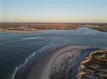

The History of Topsail
Situated at the southern end of Topsail Island, off the coast of southeastern North Carolina, the Town of Topsail Beach is the smallest of the three communities located on the 26-mile long island. North Topsail Beach occupies the northernmost section, and Surf City, the largest town on the island, is in the center. The Island is just off US Highway 17, about half-way between Wilmington and Jacksonville. Topsail Island has a rich and varied history.
Although folklore has it that the island was named Topsail (pronounced Tops'l) because pirate ships hid behind the island with their topsails visible from the sea, the name came from New Topsail Inlet. This inlet's name can be found on early navigational charts with the other Topsail Inlet located in Beaufort, N.C. Soon after J.G. Anderson developed the southernmost end of the island and named it New Topsail Beach, the island has been called Topsail.


What Can You Do At Topsail?
The Town of Topsail Beach offers vacationers a variety of activities during their stay. We have a beautiful beach in which vacationers can enjoy sunbathing, swimming, surfing, fishing or whatever their favorite beach activity may be. In adddition to the beach, we have a beautiful soundfront with access to the Intercoastal Waterway and nearby Lea Island. The Town's Marina provides boaters with all the accomodations necessary for their water activities. For those that prefer to stay on land, Serenity Point offers beachgoers fantastic views of the sound and waterway.
For those looking for a slightly more relaxing vacation the Town of Topsail Beach has several unique shops and restaurants catering to all ages and tastes. After a day of eating and shopping you can skate a few laps around the Topsail Island Skating Rink or play a round of putt-putt at the Patio Playground. Or you can stop by the Missiles and More Museum and learn some of the history of Topsail Beach during WWII.